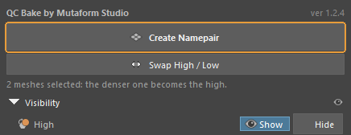
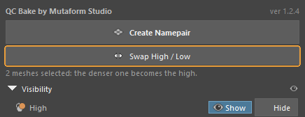
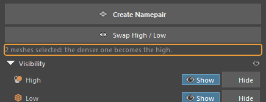
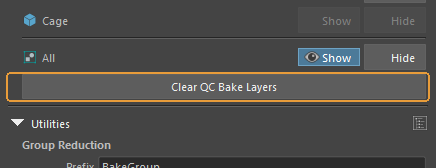
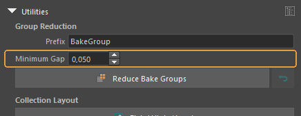
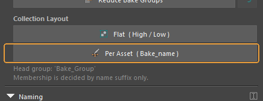
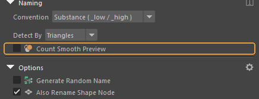
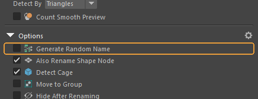
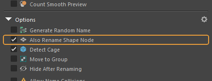
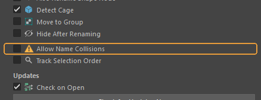

What every button does¶
The panel opens from the QC Bake button on the Mutaform shelf. It is dockable: leave it floating, or dock it to Maya's side panel. The order of sections here follows the panel from top to bottom.
The main buttons¶
Two buttons, and a line under them that says in advance what will happen.
Create Namepair¶

Renames the selected meshes into a pair: <name>_low and <name>_high.
When you need it. The main action. Select the meshes of an asset and press it — selection order does not matter, the roles are worked out for you.
What happens. With two meshes the denser one becomes the high. With three or more, one is the low and the rest are numbered: asset_high_01, asset_high_02. Which one ends up as the low depends on Track Selection Order: with it, the one selected last; without it, the lightest mesh. The name comes from the low, with any old suffix cut off. Namespaces are preserved: an object from chair:parts stays there.
When it is greyed out. Fewer than two meshes are selected. Only meshes count: curves, locators and cameras are ignored.
Worth knowing
Renaming is all the button does. It never touches geometry.
Swap High / Low¶

Swaps the roles of a pair.
When you need it. When the automatic choice was wrong. That happens with a dense low against a rough blockout: by triangle count the low weighs more, though by intent it is still the low.
What happens. Faster than renaming by hand: the names swap along with their suffixes.
When it is greyed out. The selection holds no complete pair: no object with the low suffix and one with the high suffix.
The line under the buttons¶

Says what pressing will do, before you press.
When you need it. Worth reading every time: it shows in advance which mesh is taken for the high. If that disagrees with your intent, Swap High / Low or the Track Selection Order option will fix it.
What happens. With nothing selected it reads "Nothing selected". With two meshes it says how many are selected and that the denser one becomes the high.
Visibility — show and hide¶
Shows and hides objects by role, across the whole scene at once. Built on Maya's display layers.
A role row (High, Low, Cage)¶

Shows and hides every object of that role across the whole scene, regardless of the selection.
When you need it. To look at the low without the high looming over it, and back again.
What happens. The pressed button lights up. A role with nothing in the scene stays unavailable: in an empty scene the cage row is greyed out.
When it is greyed out. The scene holds no objects with that suffix. Right after Create Namepair the High and Low rows come alive; Cage only if a cage really exists.
Worth knowing
It is built on display layers, and that matters more than it sounds: the add-on does not overwrite visibility you set by hand. Turning a role back on restores what was there, not what the tool assumed.
The All row¶

The same, for every role at once.
When you need it. To put the scene back quickly after half of it has been hidden.
Clear QC Bake Layers¶

Removes the display layers the add-on created for switching visibility.
When you need it. Before handing the scene off, so no housekeeping layers travel with it. Objects and their names are untouched — only the layers go.
Utilities — the scene as a whole¶
Merging widely separated pairs into shared bake groups, and organising the outliner.
Prefix¶

The start of the name that merged bake groups will get.
When you need it. Change it if the project has its own naming rules. Names like BakeGroup_01_low are built from it.
Default: BakeGroup
Minimum Gap¶

The smallest distance between bounding boxes at which two pairs may be merged into one group.
When you need it. The larger the value, the more cautious the merge and the more groups remain.
Default: 0.050
Worth knowing
The point is that rays from one asset must not land on another's high. Pairs standing close together cannot be merged — someone else's geometry would bake in.
Reduce Bake Groups¶

Merges pairs that sit far apart in space into fewer bake groups. The arrow on the right restores the previous names.
When you need it. When a scene holds a dozen small assets and baking each in its own pass is wasteful. Assets far enough apart do not project into one another, so they can share a pass.
What happens. Objects take a shared group name: BakeGroup_01_low, BakeGroup_01_high_01 and so on. Incomplete pairs are skipped, and the add-on reports how many.
Worth knowing
Every rename is written into the scene, so Restore still works tomorrow, long after Maya's undo stack is empty. It restores the last run; run Reduce twice and the first set of names is gone.
Flat ( High / Low )¶

Organises the outliner by role: High, Low and Cage groups under a shared Bake_Group.
When you need it. When it is easier to see everything low-poly together.
Worth knowing
Membership is decided by name suffix only, so props and helper meshes are left alone. Grouping does not move any geometry.
Per Asset ( Bake_name )¶

Organises the outliner by pair: each asset gets its own Bake_<name> group.
When you need it. When there are many assets and it matters which pair is incomplete.
What happens. The group is colour-tagged: green when the pair is complete and ready to bake, red when a member is missing or a stranger sits inside. Visible in the outliner at a glance, without expanding anything.
Naming — which suffixes to use¶
Convention¶

The set of suffixes that mark the roles.
When you need it. Pick whatever your baker expects. The choice affects more than renaming: the same suffixes are how the add-on finds objects for Visibility and for both utilities, so after switching presets the old objects stop existing as far as it is concerned.
Default: Substance ( _low / _high )
Detect By¶

The measure used to compare mesh density.
When you need it. Change it when triangles give the wrong answer. Faces and vertices are the alternatives.
Default: Triangles
Count Smooth Preview¶

Whether to count the smoothed mesh instead of the base one.
When you need it. Turn it on when you work with smooth preview enabled — the "3" key.
Default: off
Worth knowing
The Blender version has no such option; Maya forced it. polyEvaluate does not see smooth mesh preview, so without the tick a high you are viewing smoothed is counted by its base cage — and easily comes out "lighter" than the low.
Options — behaviour while renaming¶
Generate Random Name¶

Gives the pair a random name instead of the source object's name.
When you need it. When the source names are rubbish like pCube12 and there is no time to invent something better.
Default: off
Also Rename Shape Node¶

Renames the shape node along with its transform.
When you need it. Leave it on. Otherwise the scene keeps a barrel_low with a pCubeShape1 inside, and that shows up in the exported FBX.
Default: on
Detect Cage¶

Excludes from the comparison any object whose name already ends with the cage suffix.
When you need it. The cage has to be named beforehand — anything_cage will do. The add-on does not try to guess a cage from geometry.
Default: on
Move to Group¶

Puts the pair into a group right after renaming.
Default: off
Hide After Renaming¶

Hides the high as soon as the pair is made.
When you need it. Handy when the high is only there for baking and gets in the way of looking at the low.
Default: off
Allow Name Collisions¶

Allows renaming when the wanted name is already taken.
Default: off
Worth knowing
This is exactly how a barrel_low1 appears in a scene. To a baker that is a different name, and the pair falls apart. Only worth enabling when you know why the name is taken.
Track Selection Order¶

Respect the selection order: the mesh selected last is taken as the low.
When you need it. Turn it on when you want to set the roles yourself rather than leave them to a triangle count.
Default: off
Worth knowing
Another difference from Blender: there is an active object there, and Maya has none. The tick switches on Maya's own selection-order tracking, and until then the order simply is not recorded.
Updates¶
Maya has no add-on repository, so the update check is built into the tool itself.
Check on Open¶

Check for a newer version every time the panel opens.
What happens. The check runs on a background thread and stays quiet if it fails. When a newer version is found, a bar with an Install button appears at the top of the panel. It installs nothing by itself.
Default: on
Check for Updates Now¶

Check for updates immediately.
When you need it. When the automatic check is off, or you want to be sure right now. Unlike the background one, this check also reports failure.
Worth knowing
Pressing Install downloads the archive, verifies it against the checksum, unpacks it and swaps the folder — without restarting Maya. The previous version is kept until the new one has loaded, so a broken release rolls itself back.
The status line¶

The outcome of the last action, at the bottom of the panel.
When you need it. The first place to look when it seems nothing happened: both "Namepair 'barrel' created: 1 low, 1 high" and the reason for a refusal land here.
Assembled from content/qc-bake-maya.en.yml. Screenshots taken in QC Bake for Maya 1.2.4.